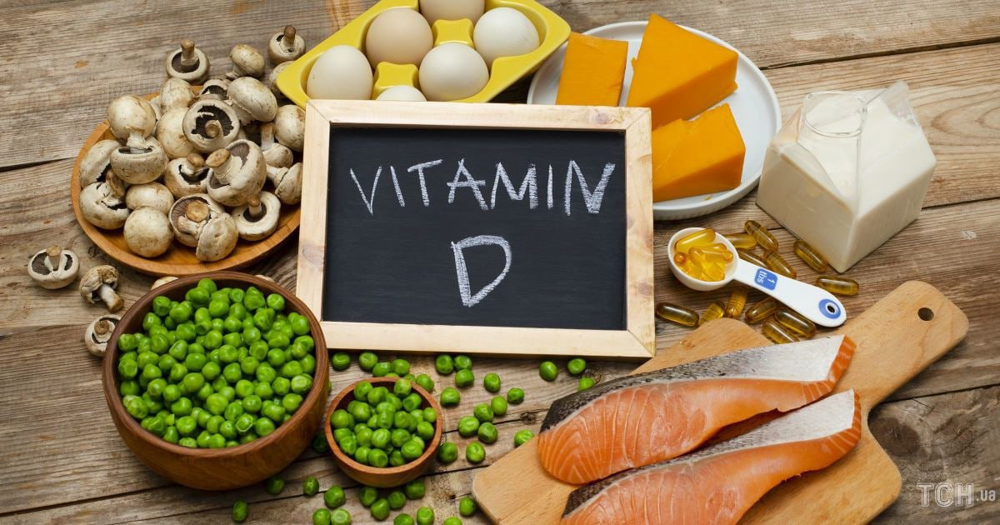
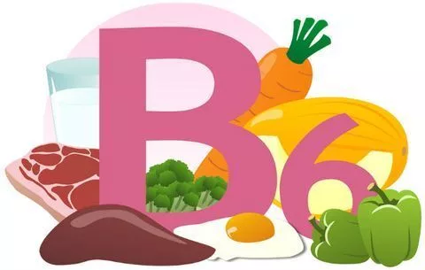
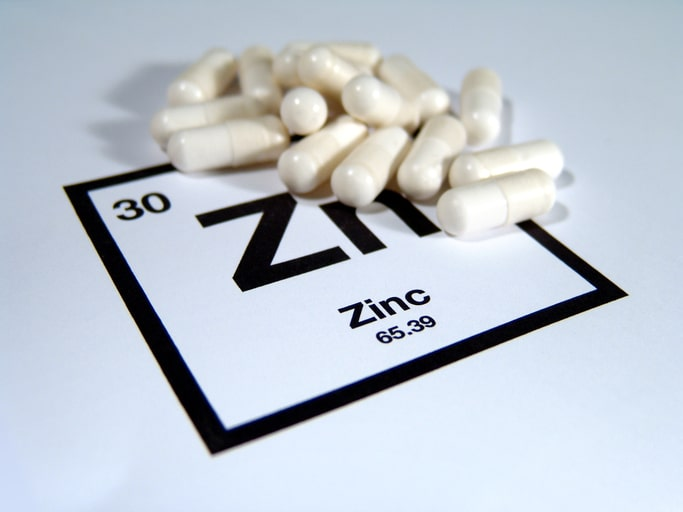

<--Назад
Вітаміни взимку
З настанням зими багато хто з нас відчуває:
нудьгу, для якої характерний комплекс наступних симптомів –
нічим не обґрунтована дратівливість, зниження працездатності, швидка втомлюваність,
втрата енергії, зниження життєвого тонусу, погіршення настрою;
загострення хронічних патологій;
часті епізоди ГРЗ, грипу, ретровірусних інфекцій, уретриту та циститу.
Протистояти погіршенню самопочуття та здоров’я, та швидше адаптуватися до нових погодних умов допоможе ефективно та без збоїв працююча імунна система.
А для цього їй потрібен комплекс вітамінів на осінь-зиму та правильне харчування.
Дефіцит мікроелементів є визнаною глобальною проблемою громадської охорони здоров’я,
оскільки поганий статус харчування схиляє до певних інфекцій. Імунну функцію можна покращити шляхом відновлення дефіциту мікроелементів до рекомендованого рівня,
тим самим підвищуючи стійкість до інфекції та сприяючи швидшому одужанню при зараженні.
Незамінні вітаміни на зиму для імунітету, що підтримують та підвищують імуннокомпетентність –
це вітаміни A, C, D, E, B2, B6 та B12, фолієва кислота, бета-каротин, залізо, селен та цинк.
Всі вони разом узяті потрібні для вироблення імунних клітин та антитіл.
Топ вітамінів, які сьогодні є золотим стандартом та рекомендуються до прийому протягом всього року всім, незалежно від віку, раціону харчування та фізичної активності – вітаміни D, В6 та цинк.
Вітамін D

У більшості людей спостерігається недостатній рівень «сонячного» вітаміну, дефіцит якого посилюється восени та взимку. Нестача вітаміну D викликає особливе занепокоєння лікарів,
оскільки недавні дослідження наголосили на його важливості в обмеженні частоти та тривалості епізодів інфекції, як серед населення в цілому,
так і серед спортсменів. Нестача вітаміну D – це ще й підвищення шансів на розвиток астми у дітей, хронічних обструктивних хвороб легень та туберкульозу
у дорослих.
D-дефіцит прискорює дебют таких захворювань як цукровий діабет 2 типу, ревматоїдний артрит, розсіяний склероз.
Вміст вітаміну D у 100 г продукту:
риб’ячий жир — 250 мкг;
печінка тріски — 200 мкг;
жирний оселедець — 30 мкг;
скумбрія — 16,1 мкг;
червона риба (сьомга, лосось, горбуша) — 10–11 мкг;
курячий жовток — 7,7 мкг;
ікра червона зерниста — 2,9 мкг;
яйце куряче — 2,2 мкг;
масло вершкове — 1,3 мкг;
молоко — 1,3 мкг;
мінтай — 1 мкг;
твердий сир — 1 мкг.
Вітамін B6

Активна форма вітаміну B6 – піридоксаль 5′-фосфат (PLP), служить кофактором більш ніж у 150 ферментативних реакціях.
Його дефіцит знижує і гуморальну і клітинно-опосередковану імунну відповідь:
уповільнюється дозрівання лімфоцитів, зменшується сила реакцій гіперчутливості уповільненого типу, порушується вироблення антитіл.
Сьогодні доведено, що контрольований прийом добавки вітаміну B6 покращує деякі імунні функції за рахунок стимуляції синтезу метаболітів з імуномодулюючою дією.
Приймати В6 особливо важливо тим, у кого дефіцит цього вітаміну неминучий через запальні процеси, імунологічні зміни в літньому віці, а також при ревматоїдному артриті, ВІЛ, недоїданні, зловживанні алкоголем.
Особливо багато його в зернових паростках, у волоських горіхах і ліщині, в шпинаті, картоплі, моркві, цвітній і білокачанній капусті, помідорах, полуниці, черешні, апельсинах і лимонах.
Також він міститься в м'ясних і молочних продуктах, рибі, яйцях, крупах і бобах.
Цинк

Зв’язок між дефіцитом цинку та імунною дисфункцією було відкрито близько 50 років тому. Його нестача впливає на імунні клітини
і призводить до підвищеного ризику запалення, аж до смерті. Дефіцит цинку тісно пов’язаний з недостатнім споживанням з їжею або порушенням всмоктування, типовий для людей похилого віку,
вегетаріанців/веганів, пацієнтів з деякими хронічними патологіями та анемічними станами. Цинк важливий для підтримки та розвитку імунних клітин як вродженої, так і адаптивної імунної системи.
Зміна гомеостазу цинку впливає на ці клітини, призводячи до порушення утворення, активації та дозрівання лімфоцитів, збою міжклітинної комунікації за допомогою цитокінів, ослаблення вродженого захисту за допомогою фагоцитозу та окисного вибуху.
Білкова їжа, включаючи морепродукти, пісне м'ясо та птицю, яйця, бобові (квасоля та горох), горіхи, насіння та соєві продукти, також багата на цей мінерал.
Устриці, червоне м'ясо та птиця – чудові джерела цинку. Запечена квасоля, нут та горіхи (наприклад, кешью та мигдаль) також містять цинк.
В Україні до «святої трійці» мікроелементів для імунітету – цинк, D та В6, лікарі, дієтологи та фахівці у спортивному харчуванні рекомендують усім додати поліненасичені жирні кислоти омега 3-6-9.
Ці компоненти риб’ячого жиру, особливо омега-3, сприяють усуненню запальних процесів і постійно стимулюють роботу зовнішнього імунітету [03], не виробляються в організмі і тому їх щоденний прийом рекомендований ВООЗ [04]
жителям регіонів, де немає можливості щодня вживати морську рибу або морепродукти.
Мінерали та вітаміни восени і взимку для жінок репродуктивного віку – це залізо та B9 (фолієва кислота), а для тих, кому за 40,
рекомендовано разом із вітаміном D обов’язково приймати кальцій. Ця комбінація (D+CA) загальмує менопаузальний остеопороз,
БАД Залізо HAYA LABS CHELATED IRON, буде заповнювати дефіцит, що виникає внаслідок місячних, а фолієва кислота, серед інших її плюсів –
це ще й добавка №1 для підтримки жіночої фертильності.
Мошовська Ольга